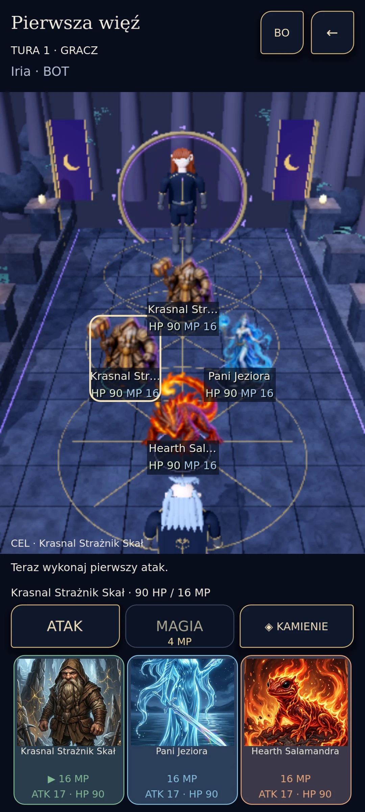

- Wyzwanie
- Niższa jakość grafiki ukrywała część ambientu, ale kod nadal aktualizował jego transformacje.
- Analiza
- Audyt i mikropomiar oddzieliły koszt pętli ambientu od FPS całej gry i renderowania GPU.
- Przyczyna
- Pętla przetwarzała także ptaki, motyle i warstwy mgły przekraczające aktywny budżet jakości.
- Decyzja i poprawka
- Aktualizacje ograniczono do aktywnego budżetu, a zmianie jakości towarzyszy natychmiastowe ukrycie wyłączonych obiektów. Zachowano wspólny zegar animacji.
- Weryfikacja
- Historyczny raport z 13 października opisuje 265 kontroli PASS i desktopowy mikropomiar w pięciu partiach po 5000 callbacków. Bieżący audyt potwierdził pętle w kodzie, bez powtórzenia benchmarku.
- Wynik
- Low aktualizuje 8 zamiast 25 obiektów tej grupy. Mediana desktopowego callbacku spadła z 0,042918 do 0,033380 ms; jest to mała oszczędność CPU, bez deklaracji poprawy FPS telefonu.
- Źródło
- vaeloria-performance
Gry
Vaeloria
Rozwijana gra fantasy łącząca eksplorację 3D, więź ze stworzeniami i taktyczne pojedynki.
W rozwoju
Od potrzeby do produktu
Dla kogo
- Gracze zainteresowani eksploracją fantasy i taktycznymi pojedynkami
- Uczestnicy prywatnych testów rozwijanej gry
Problem
Przygodowy świat, kolekcja stworzeń i walka potrzebują wspólnego postępu oraz oprawy, która mieści się w budżecie telefonu.
Dlaczego powstał
Połączyć podróż bohatera EOS, odkrywanie świata i budowanie drużyny stworzeń w jednym doświadczeniu.
Rozwiązanie
Istniejąca wersja integruje Las Ziemi 3D, kampanię, kolekcję, lokalne walki z AI i zapis postępu. Sześć pełnych krain i docelowa oprawa pozostają kierunkiem rozwoju.
Architektura i technologie
- Godot i C# obsługują sceny, eksplorację oraz prezentację areny
- Domena walki i aplikacyjne reguły postępu są oddzielone od renderera
- Lokalne magazyny JSON przechowują profil i rozgrywki; zapis poprzedza publikację nowego stanu
- API kont i czatu korzysta z ASP.NET Core, PostgreSQL i SignalR; obecność kodu nie potwierdza aktualnego wdrożenia
- MultiMesh, sektory roślinności i limity jakości kontrolują koszt prezentacji lasu
C# / Godot 4.6 / .NET / OpenGL Compatibility / JSON / ASP.NET Core / PostgreSQL / SignalR
Potwierdzony zakres
- Tworzenie bohatera EOS i wprowadzenie do świata
- Eksploracja Lasu Ziemi z mostami, sekretami, kryształami i minimapą
- Kolekcja kart, skład drużyny i deterministyczny silnik taktycznej walki
- Lokalne pojedynki, liga i turnieje z AI
- Zapis i wczytywanie postępu, odkryć oraz kontekstu powrotu z walki
- Profile Low, Medium, High oraz Reduced Motion
- Ambient leśny, reakcja fauny na odległość i budżety aktywnych obiektów
Wyniki i granice weryfikacji
- Raport Lasu Ziemi z 12 października 2026 opisuje fizyczne QA z zachowaniem postępu. Ten historyczny wynik nie obejmuje późniejszych zmian renderowania.
- Raport wydajności z 13 października dokumentuje 265 kontroli regresji ambientu PASS oraz pomiary desktopowe. Nie dowodzi wzrostu FPS Androida ani pełnego braku regresji urządzeń.
- Docelowa jakość artystyczna pozostaje częściowa; modele EOS, fauna i billboardy stworzeń są przejściowe.
Materiały z produktu
Rzeczywiste materiały z produktu. Wybierz obraz, aby go powiększyć. W podglądzie użyj strzałek; Escape zamyka powiększenie.


Wyzwania i rozwiązania
Aktualny etap i dalsza droga
W rozwoju · Publiczna strona preview Android/Windows jest dostępna. Aktualny zakres rozgrywki jest offline; funkcje online i docelowa oprawa pozostają w rozwoju.
Do potwierdzenia lub ukończenia
- Sześć pełnych światów, docelowa grafika i mecze online pozostają niezakończone.
- Długie sesje Android/Windows, termika i potwierdzone minimalne wymagania sprzętowe wymagają dalszych prób.
- Niewyjaśniona historyczna anomalia przemieszczenia EOS pozostaje otwarta; wykluczonej próby nie użyto jako dowodu wydajności.
- Galeria zawiera dwa autentyczne ekrany z publicznego preview; docelowa oprawa pozostaje w rozwoju.
Planowane kierunki
- Dalsza rozbudowa krain po stabilizacji istniejącej eksploracji
- Docelowe modele, rigging i animacje EOS oraz stworzeń
- Długie, porównywalne próby wydajności i pamięci na urządzeniach
- Rozwój funkcji online oddzielnie od lokalnej ligi i turniejów
Dostęp do projektu
Publiczna strona preview Android/Windows jest dostępna. Aktualny zakres rozgrywki jest offline; funkcje online i docelowa oprawa pozostają w rozwoju.
Podstawa prezentacji
Zakres ustalono na podstawie kodu i materiałów wymienionych poniżej. Wyniki historycznych testów zachowują datę oraz zakres; nie oznaczają ponownego testu ani potwierdzenia produkcji.
- Vaeloria: przegląd bieżącej gry i mapy systemów · code ·
0716317a
Godot, silnik walki, eksploracja, zapis, profile jakości oraz kod kont i czatu. - Vaeloria: raport Lasu Ziemi 2.0 · report ·
0716317a
Historyczne QA z 12 października 2026; osobne ograniczenia artystyczne i próby urządzenia. - Vaeloria: pomiary bazowe wydajności 13 października 2026 · report ·
0716317a
Historyczne regresje i desktopowy mikropomiar ambientu; bez ponownego uruchomienia, bez ekstrapolacji na Android. - Publiczny odczyt strony i dostępności, 15.10.2026 · http ·
2026-10-15
Odczyt HTTPS. Dla APK tylko Range 32 B; bez pełnego pobrania, instalacji i weryfikacji sumy publicznego pliku.